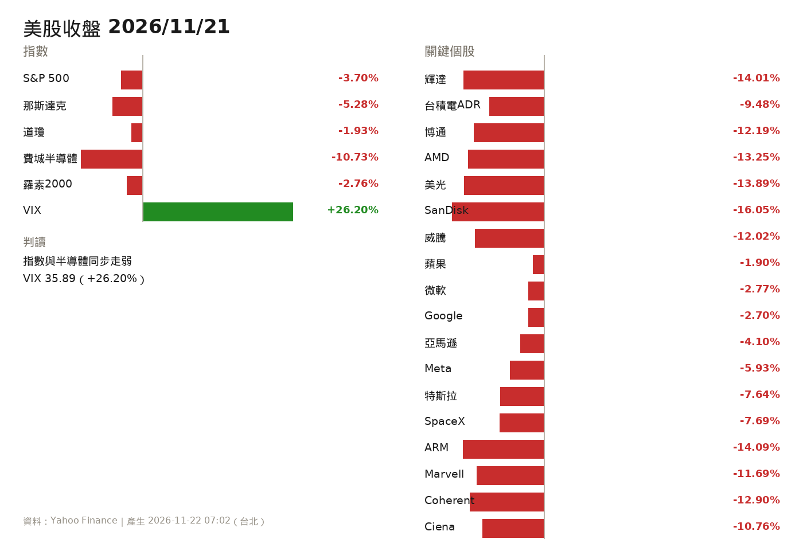
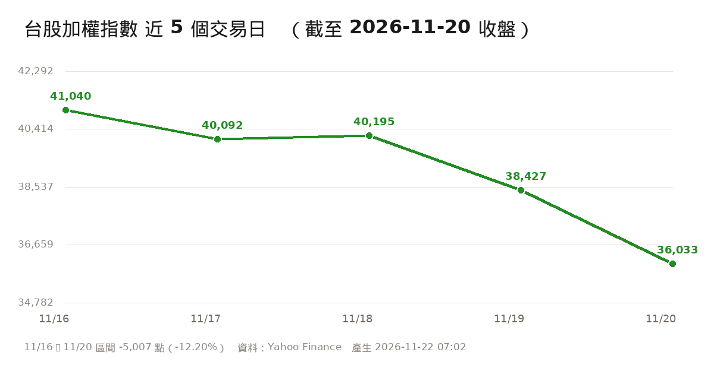
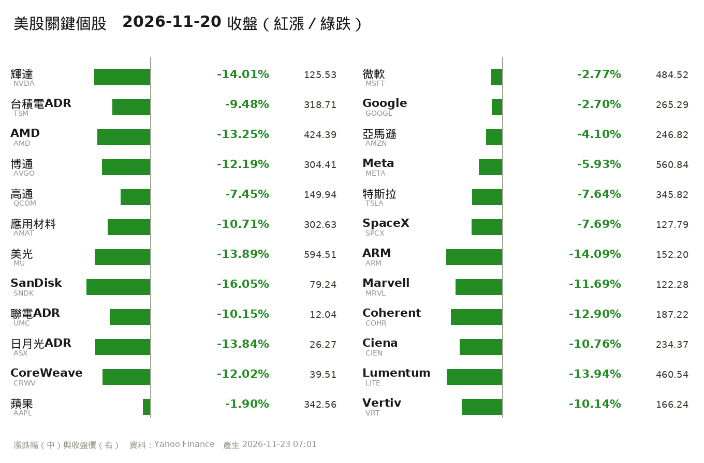
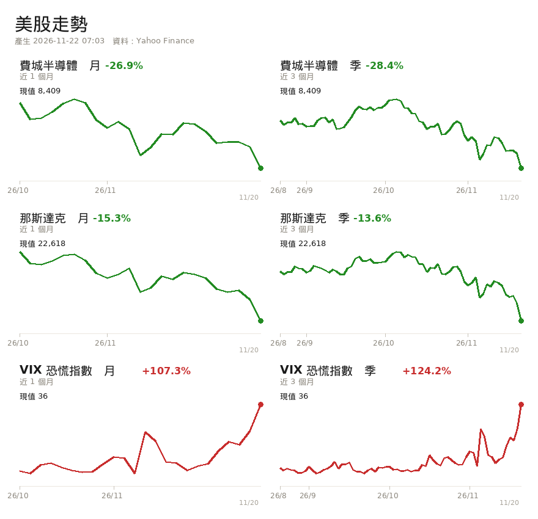
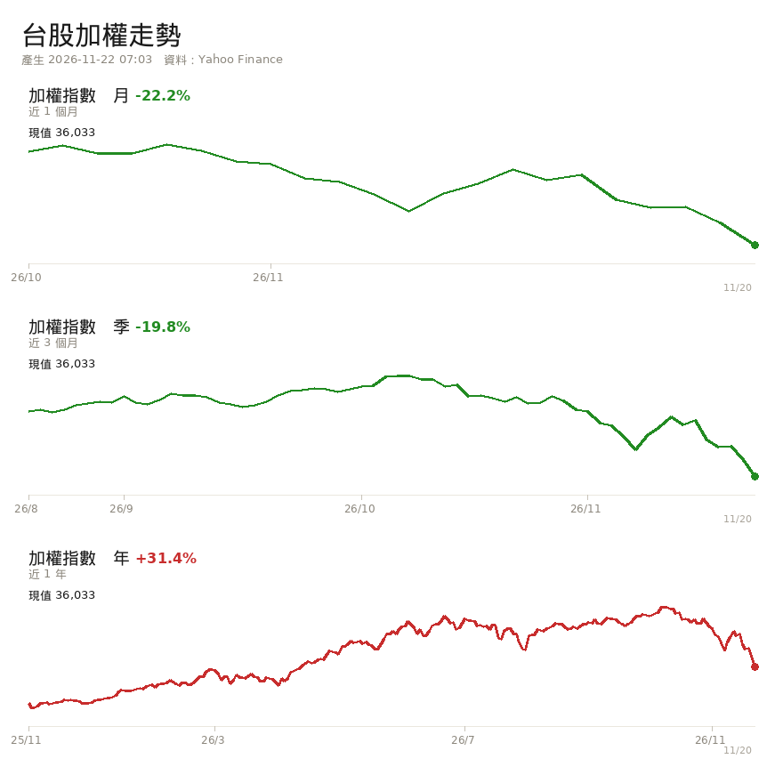

2026-11-22 投資日報2026-11-23 13:24
週日休市。今天沒有新的現貨交易，最後交易日是 11/20（五）；美股最後交易日也是 11/20。 所以今天的重點不是「今天跌多少」，而是 11/23（一）開盤前你手上該怎麼擺。
重點提醒｜Emmy（持續中）
來源：
財經頻道/Emmy追劇時間/Emmy重點提醒追蹤.md。未解除就會每天出現；判定解除當天標「過期」，隔天起不再列出。
- E1 輝達 NVDA／黃仁勳 真正風險不是技術洩密，是「走私晶片＋長期遊說晶片禁令」的國安問題。已持續 10 天。⬆️ 惡化（法律風險升級）：路透 11/20 引述知情人士指 SEC 執法部門正調查輝達會計處理（焦點之一是地區營收由「帳單地址」改為「客戶總部」後新加坡不再單列）；加州檢察長 11/19 另對輝達發傳票。黃仁勳已同意 12/1 赴眾院三個國安委員會閉門簡報；川普 11/20 喊話「讓黃仁勳回去工作」。NVDA 11/20 收 125.53、較 10 月高點 239.24 跌約 48%，週線連 7 黑（2008 年以來最長）。解除條件：正式（非臨時）新任 CEO 定案並公開承諾對台供應鏈與產品路線不變，且財報與後續國會簡報後無新增出口管制。
- E2 台股／美股大盤 民主黨期中選舉大勝 → AI 資料中心與科技業監管收緊的恐慌，是 11/05-11/06 崩盤主因。已持續 14 天。⬆️ 惡化（國會戰線擴大）：眾院外委會 11/19 依 ECRA 公開 BIS 許可資料，2025/12–2026/5 核准輝達＋超微共 87.99 萬顆高階 AI 晶片輸中（申請 344.4 萬顆、21 張許可），部分買家列 1260H 涉軍名單；委員會要求 BIS 次長凱斯勒 12 月初出席聽證。BIS 本週新規並封堵「海外資料中心遠端使用」路徑。解除條件：具體監管法案送進國會並過關，或政策明確轉向寬鬆。
- E3 台股／美股大盤 「熊市要來了嗎、該獲利了結嗎」——她事前提示了這一波下殺。已持續 21 天。⬆️ 惡化（週末續破底）：台指期夜盤 12 月契約 11/21 最後成交 33,919（-1,881 點、-5.25%），等於比 11/20 現貨收盤 36,033.29 再低約 2,114 點；台積電期貨 1,880（-116）。金管會 11/21 宣布第三波限空令（11/23 起全面禁止平盤下放空、融券保證金 130%→150% 等 5 項），國安基金 11/21 16:00 新聞稿承認自 11/6 授權後已進場護盤。解除條件：指數站回季線且外資轉為連續買超。
- E4 油價／布蘭特原油 中東戰火推升油價 → 通膨壓力 → 股市下跌。已持續 24 天。⬆️ 惡化＋數據修正：11/21 本檔誤記「布蘭特 89.87 首次跌破 90」，經 11/22 复核，11/20 實際結算為 92.57（+0.64%）、WTI 83.98（+0.93%），並未跌破 90。同期胡塞武裝威脅攻擊沙國紅海港口、荷姆茲海峽油輪觸雷，Brent／WTI 連 3 週收黑。OPEC+ 11/29 開會討論 2027 產量。解除條件：布蘭特回落至 90 美元以下且中東衝突降溫。
- E5 記憶體族群／8299 群聯 大摩一次降 6 檔記憶體、目標價腰斬，群聯 2,588→1,357 降為「劣於大盤」；理由是 2028 供需恢復平衡＋美國資料中心約兩成產能延後到 2029。已持續 11 天。➡️ 未變（週末無交易，公司面有動作）：8299 11/20 收 1,320（-9.28%），仍低於大摩目標 1,357。公司 11/20 重訊：本次庫藏股已買回 25.5 萬股、均價 1,439.18、金額達 3 億元以上；11/21 再發「太空 SSD 攜手 Lonestar 軌道資料中心、明年升空」。屬公司動作與題材，價格未反映，維持持續。解除條件：NAND 現貨報價重新轉強且外資對群聯轉為買超，或大摩回補評等。
- E7 AI 硬體成本／毛利率見頂 輝達 Q4 毛利率指引 71~72%，低於本季 74.8%；採購承諾大幅增加，成本正往上游擠。已持續 4 天。➡️ 未變：Q4 毛利率指引 71~72%（本季 74.8%）不變；採購承諾口徑（3,660→5,180 億 vs 2,790→3,900 億）仍未以 10-Q 原文核對，維持待核。解除條件：輝達毛利率回升至 74% 以上且採購承諾增速放緩，或記憶體現貨報價連續 2 個月回落。
- E8 跨資產同步下跌／流動性緊縮 股、油、金同一天一起跌，代表「保證金追繳、到處變現」，不是資金輪動。已持續 1 天。➡️ 未變（數據修正）：11/20 同日 費半 -10.73%、布蘭特 +0.64%、黃金 3,515.4（-4.62%）、美元指數 103.81（-0.09%）、美 10 年殖利率 4.91%（-2.77%）——股跌、金跌、債券殖利率也跌（價格漲），資金同時離開股票與黃金，仍符合「到處變現」的流動性特徵；VIX 35.89（+26%）未回落。解除條件：VIX 回落至 25 以下、黃金與股市不再同步下跌、美 10 年殖利率止穩。
- E9 AI 晶片出口許可調查擴散（輝達＋超微） 眾院公開 88 萬顆輸中許可後，調查戰線從「走私」擴大到「許可審查」與「會計揭露」；超微遭 Hunterbrook Media 做空報告狙擊（指其中國供應鏈與韌體支援），超微否認不當行為。今天提出。🆕 新增（已發生）：超微 11/19 -7.7%、11/20 再 -13.25% 收 424.39；台廠 AMD 供應鏈同日集體重挫（三立：6 檔跌停）。這是「消息面指控＋股價已反應」混合體，指控本身未經法院或監管認定。解除條件：國會聽證結束且無新一輪管制、超微與輝達不再創低，或做空報告被監管駁回。
⚠️ 警報狀態（排程現況，必須讓你知道）
危機警報 盤中每5分（09:00–13:55，週一～五）：last_status ok，但今天週日不會發；下一次是 11/23 09:00。危機警報 影片檢查22:20：last_status ok。- 🔴
2330 跌破2340 提醒已停用（enabled=false）、上次狀態為 error。原因是 2330 在 11/20 收 2,000 已遠低於 2,340，這支到價提醒等於被穿透後失效。我不會自己改它（你說過排程要先問），但你要知道它現在不會叫。 - 🔴
粉專貼文抓取 06:20上次狀態 error，所以今天沒有fb_2026-11-22.json，④ 的消息面頁籤今天只有「抓取失敗」的說明，不是我漏寫。
⓿ 先回答三個問題：消息面 vs 已發生
題一：金管會限空令 3.0＋國安基金進場，是不是「政府要拉盤」？
| 項目 | 狀態 | 說明 |
|---|---|---|
| 第三波限空令 5 項措施 | 🟥 已發生 | 金管會 11/21 宣布，11/23 起：①全面禁止平盤下放空 ②融券保證金 130%→150% ③暫停受理認售權證 ④鼓勵庫藏股（Q4～2027Q1 執行可納 ESG 加分）⑤鼓勵出借人暫停出借、已出借提前召回 |
| 國安基金「已進場」 | 🟥 已發生 | 國安基金 11/21 16:00 新聞稿：自 11/6 臨時委員會授權後已進場執行安定任務；未公布投入金額 |
| 卓榮泰 11/20、11/21 連兩天召集財經首長 | 🟥 已發生 | 行政院證實，11/21 提 4 點裁示（財政部盯產業資金、強化信保、國安基金強化穩市、央行盯匯率） |
| 「限空令一出就會反彈」 | 🟨 消息面 | 這是分析師與媒體說法（TVBS 引述「下週迎報復性反彈」）；可查的反例：限空令 1.0（11/9）之後跌、2.0（11/20 上路）當天跌 2,393 點 |
| 週一開盤位置 | ⏳ 還沒發生 | 夜盤 33,919 已先定價約 -5.9%；現貨實際開盤價只有 09:00 才知道 |
怎麼用：政策是「減速器」不是「方向盤」。把它當成「跌得比較慢」，不要當成「可以接刀」。
題二：融資斷頭潮結束了嗎？
| 項目 | 狀態 | 說明 |
|---|---|---|
| 11/20 融資單日大減 | 🟥 已發生 | 上市 -491.41 億、上櫃 -145.60 億，合計 -637.01 億；上市餘額 4,352.27 億、上市櫃合計 5,680.8 億 |
| 整戶融資維持率 | 🟥 已發生 | 11/20 大盤融資維持率 138.4%（單日 -7.5 個百分點，股溜平台統計）；距 130% 追繳門檻只剩 8.4 個百分點 |
| 違約交割 | 🟥 已發生 | 證交所統計今年以來違約交割金額突破 131 億元 |
| 「11/23、11/25 兩波追繳賣壓」 | 🟨 消息面／推算 | 券商追繳是 T 日通知、T+2 內補繳，用成交日回推「週一、週三各一波」屬達人推算，不是公告事實 |
| 融資是否已洗完 | ⏳ 還沒發生 | 要看到「融資連 2 日不再大減＋指數不再破底」才算，現在只有一天 |
怎麼用：看到「融資大減＝籌碼洗乾淨」這種說法，先問一句「那明天還有沒有追繳單？」— 只有一天的資料不算洗完。
題三：SEC 查輝達會計，輝達是不是要完了？
| 項目 | 狀態 | 說明 |
|---|---|---|
| SEC 調查輝達會計 | 🟥 已發生（媒體引述知情人士） | 路透 11/20 報導 SEC 執法部門正檢視輝達會計處理；WSJ 11/17 已披露有民事調查 |
| 加州檢察長發傳票 | 🟥 已發生 | 加州檢察長邦塔 11/19 宣布向輝達發傳票，查是否違反加州企業證券法、是否誤導投資人 |
| 「查到什麼違法事項」 | ⏳ 還沒發生 | 路透明說：啟動調查不代表違法，多數案件最後沒有執法行動；也不知道查哪些具體項目 |
| 股價已跌 48% | 🟥 已發生 | NVDA 11/20 收 125.53，較 10 月高點 239.24 跌約 48%，週線連 7 黑（2008 年以來最長） |
怎麼用：這是「法律風險已定價、結論還沒出來」。已反應的是價格，未反應的是 12/1 閉門簡報與 12 月初聽證的內容。
① 一句話結論
週末沒有現貨，但台指期夜盤 33,919 已經把「週一補跌約 5%」先定價掉；政府三波限空＋國安基金都上桌了，紀律上該做的是「持股水位降到 3 成以下、開盤不摸底、不攤平」，不是猜底部在哪。 台股溫度計 10／100（寒冬） — 六個成分有四個掛零（乖離 -19.2%、融資 20 日 -32.5%、VIX 35.89、外資 5 日 -2,187 億）。
🎒 JNA-202 PRO 快取單肩包：目前最低 2,800（BigGo 全新），目標 1,500，還差 1,300，未達標。
② 國際與美股（最後交易日 11/20 週五）
市場溫度（警示燈）

台股溫度計：10／100（寒冬） 2026/11/20
- 量能：0.96 倍均量 → 46 分
- 乖離：-19.2%（距 60 日線） → 0 分
- 融資：4,352 億（20 日 -32.5%） → 0 分
- 廣度：上漲 234 / 下跌 789 → 5 分
- VIX：35.89 → 0 分
- 外資：-2,187 億（5 日） → 0 分
四大指數
| 指數 | 收盤 | 漲跌 | 漲跌幅 |
|---|---|---|---|
| 道瓊 | 48,147.33 | -949.73 | -1.93% |
| S&P 500 | 6,910.39 | -265.41 | -3.70% |
| 那斯達克 | 22,617.73 | -1,261.47 | -5.28% |
| 費城半導體 | 8,408.59 | -1,011.13 | -10.73% |
| VIX | 35.89 | +7.45 | +26.20% |
- 費半週線 -17.13%，是這波最慘的板塊；道瓊只跌 1.93%，代表賣壓集中在 AI／半導體，不是全面經濟衰退式崩盤。
- 美股四大指數都已跌破年線（宏爺 11/20 筆記的技術面判斷，對照收盤成立）。
- 註：05:15 的美股快報顯示 VIX 39.53（+38.99%），那是盤中高點時點；本文用 Yahoo 收盤 35.89。兩個數字都真，差在取樣時間。

關鍵個股（11/20 收盤，Yahoo Finance）
| 個股 | 收盤 | 漲跌幅 | 一句判讀 |
|---|---|---|---|
| 輝達 NVDA | 125.53 | -14.01% | SEC 查會計＋加州傳票，週線連 7 黑，10 月高點以來 -48% |
| 台積電 ADR TSM | 318.71 | -9.48% | ADR 溢價收斂，週一台股現貨要補這段 |
| AMD | 424.39 | -13.25% | 做空報告狙擊（中國供應鏈、韌體支援），公司否認 |
| 博通 AVGO | 304.41 | -12.19% | ASIC 龍頭跟著 AI 去槓桿，沒有例外 |
| 高通 QCOM | 149.94 | -7.45% | 手機為主，跌幅相對輕，資金往非 AI 靠 |
| 應用材料 AMAT | 302.63 | -10.71% | 設備股補跌，資本支出疑慮直接打在這裡 |
| 美光 MU | 594.51 | -13.89% | 記憶體是最弱族群，NAND／DRAM 報價轉弱預期 |
| SanDisk SNDK | 79.24 | -16.05% | 全場最弱，NAND 純度最高 |
| 聯電 ADR UMC | 12.04 | -10.15% | 成熟製程同樣被砍，不是只有先進製程 |
| 日月光 ADR ASX | 26.27 | -13.84% | 封測跟著 AI 晶片走 |
| CoreWeave CRWV | 39.51 | -12.02% | 高槓桿算力租賃，利率不鬆就是最脆弱一環 |
| 蘋果 AAPL | 342.56 | -1.90% | 全場最抗跌，非 AI 現金流成為避風港 |
| 微軟 MSFT | 484.52 | -2.77% | 雲端巨頭跌幅收斂，資本支出疑慮但現金流撐住 |
| Google GOOGL | 265.29 | -2.70% | 同上，廣告＋雲基本面沒變 |
| 亞馬遜 AMZN | 246.82 | -4.10% | AWS 資本支出是雙面刃 |
| Meta META | 560.84 | -5.93% | 自建 AI 機房，市場開始算折舊 |
| 特斯拉 TSLA | 345.82 | -7.64% | 高本益比成長股被殺 |
| SpaceX SPCX | 127.79 | -7.69% | 新股波動大，跌幅超過 5% 屬正常放大；本週無發射或財報事件，跌的是風險偏好 |
| ARM | 152.20 | -14.09% | 客製化晶片（ASIC）這條線比 GPU 更慘，資金兩邊一起撤 |
| Marvell MRVL | 122.28 | -11.69% | 同上，ASIC 沒有蹺蹺板效應，是同步下跌 |
| Coherent COHR | 187.22 | -12.90% | 光通訊第二層受害，資料中心內部連線需求被重估 |
| Ciena CIEN | 234.37 | -10.76% | 同上 |
| Lumentum LITE | 460.54 | -13.94% | 光模組跌最重，代表市場在砍「第二層受益者」 |
| Vertiv VRT | 166.24 | -10.14% | 散熱電源跟跌，AI 機房蓋不蓋直接被質疑 |
上漲的部分（別只看跌）
- 美股這 24 檔全數下跌，沒有逆勢上漲的權值股 —— 這是事實，不是選擇性報導。
- 但台股 11/20 盤面上仍有族群逆勢：資安族群 6 檔漲停（仁大資訊 7767、華經 2468、資通 2471、意藍 6925、中華資安 7765、資拓宏宇 6614）；創新服務（7828）從跌停一路拉到漲停 1,295 元。
- 意思：資金沒有消失，是從 AI 半導體搬到「非 AI、有政策題材」。所以不是「全部完蛋」，是「換手」。
跨市場
| 項目 | 數值 | 漲跌 |
|---|---|---|
| 美 10 年期殖利率 | 4.91% | -2.77%（殖利率下滑＝債券價格上漲） |
| 美 5 年期殖利率 | 4.70% | -3.39% |
| 美元指數 | 103.81 | -0.09%（幾乎不動） |
| 布蘭特原油 | 92.57 | +0.64% |
| WTI 原油 | 83.98 | +0.93% |
| 黃金 | 3,515.4 | -4.62% |
| 美元／台幣 | 32.936 | 台幣小升 0.6 分（央行尾盤調節） |
| VIX | 35.89 | +26.20% |
這張表最重要的一行是黃金：股跌、金也跌，代表有人「賣黃金去補股票的保證金」，這是流動性事件的特徵（E8）。VIX 沒回落，風險沒解。
③ 台股覆盤（11/20 週五，最後交易日）

| 項目 | 數值 | 漲跌 |
|---|---|---|
| 加權指數 | 36,033.29 | -2,393.60（-6.23%） |
| 開／高／低 | 37,646.13／37,646.13／35,738.68 | 開盤即最高，一路走低 |
| 成交金額（集中） | 8,773.5 億 | 量比約 0.77 倍 |
| 櫃買指數 | 263.31 | -22.02（-7.72%） |
| 三大法人 | -522.46 億 | 外資 -94.13、投信 -87.49、自營 -340.84 |
| 上市融資餘額 | 4,352.27 億 | -491.41 億 |
| 上市櫃融資合計 | 5,680.8 億 | -637.01 億 |
| 融資維持率 | 138.4% | -7.5 個百分點 |
| 跌停家數 | 369 家 | 上市 180、上櫃 189 |
| 下跌家數 | 2,386 家 | 上漲 137 家 |
| 創 52 週新低 | 245 家 | — |
盤勢節奏
- 開盤就是最高點（37,646.13）→ 沒有反彈，一路走低到 35,738.68 → 尾盤小拉 295 點收 36,033.29。這種線型代表「沒有人接」。
- 跌點是史上第 3 大收盤跌點（前兩名是 11/16 的 -6.03% 與 11/19 的 -4.40%，都發生在本月）；週線 -7,641.83 點（-17.50%），1990 年以來單週最慘。
- 誰在賣？不是外資。外資只賣 94.13 億，自營商（避險 -290.16 億）與融資斷頭才是主賣壓 → 這是「內資去槓桿」，不是「外資棄守」。這個差別很重要：外資賣完可以回頭買，融資斷頭賣完籌碼就真的少了。
- 權值股：2330 台積電 2,000（-4.76%，單檔拖累大盤 759.85 點，成交值 1,512.32 億）；2454 聯發科跌停 3,350（-9.95%）；2308 台達電跌停 900；3711 日月光 457（-9.33%）；2317 鴻海 210（-4.76%）；8299 群聯 1,320（-9.28%）。
- 千金股只剩 30 檔，23 檔跌停，只有 6 檔沒跌停（大立光、台積電、緯穎、群聯、智邦、藥華藥）。
下週要看的四個數字（不是看新聞）
- 09:00–09:30 成交量：開盤若無量跌停／開低無量，代表賣壓還在排隊；有量承接才是真止穩。
- 台積電現貨 vs 期貨 1,880：期貨領先現貨，現貨收在期貨之上就是抗跌訊號。
- 融資餘額有沒有連 2 日不再大減（單日減幅 < 100 億）。
- 台幣 33 元關卡：台幣再貶破 33.04（11/20 最低），代表外資還在匯出。
④ 頻道影片重點
今晚（11/22）22:00 才會有新集數；以下引用最近 24 小時內已歸檔的兩集：一綺聊股 11/20、宏爺講股 11/20（兩集都在 11/21 01:08 前完成筆記）。
🔴 加碼／看多訊號
- 大盤｜一綺：融資單日大減 491 億、餘額只剩 4,300 多億，「現在融資源其實很低」 ⏱ [23:45]、[23:50]（一綺 11/20）→ 對照證交所 4,352.27 億、-491.41 億，她的數字正確。
- 2330 台積電｜一綺：今天掛 1,990 想接，最後抽單沒成交，語氣是「這個價位可以看」 ⏱ [17:07]、[18:07]（一綺 11/20）→ 當日最低 1,970，掛 1,990 會成交，她選擇先等。
- 資金｜一綺：上週就準備的現金「一毛錢都還沒投入」，還有子彈 ⏱ [55:30]（一綺 11/20）。
- 基本面｜宏爺：上市櫃前三季稅前淨利 6 兆 6,126 億元、年增 86.43%，指數相對獲利折價 23.1%，「不該在這裡殺低」 ⏱ [21:38]、[21:47]（宏爺 11/20）。註：字幕機翻把 6.6126 兆寫成 6.0126 兆，已回查金管會 11/19 新聞稿校正。
- 籌碼｜宏爺：外資期貨空單 9.8 萬口在高檔，一旦大量平倉就是反彈火種 ⏱ [10:52]（宏爺 11/20）。
🟢 危機／減碼訊號
- 大盤｜一綺：現在是「情緒主導、無差別下殺」，主張不要輕易抄底；「三字頭如果連那邊都守不住，那就二字頭」 ⏱ [48:24]、[47:16]（一綺 11/20）。
- 高價股｜一綺：「有一些高價股有點出現流動性危機，因為開盤就鎖跌停」 ⏱ [16:44]（一綺 11/20）。
- 融資維持率低的個股｜一綺：不補保證金，券商「不計代價的砍出，他管你下一檔跌停」 ⏱ [43:10]（一綺 11/20）。
- 自我檢討｜一綺：最大失誤是「輕忽黃仁勳下台」對 AI 高估值的衝擊；她的帳戶 PO 出 -28% ⏱ [18:40]、[14:00]（一綺 11/20）。
- 技術面｜宏爺：四大指數全部跌破年線，且是長黑收最低的「有效跌破」，市場進入較長盤整 ⏱ [04:10]（宏爺 11/20）。
- 費半｜宏爺：死亡交叉＋跌破年線，從 6 月 4,000 點跌到 3,400 附近 ⏱ [05:17]（宏爺 11/20）。
- 政策反效果｜宏爺：禁空令 2.0 反而逼空頭「賣現股」降部位，變成另一股賣壓 ⏱ [11:48]（宏爺 11/20）。
- 維持率｜宏爺：掉到 147.9%，離 130% 追繳只剩一根中長黑 ⏱ [10:07]（宏爺 11/20）。註：證交所公布 11/19 全市場整戶擔保維持率為 156.18%，口徑不同，以官方為準。
💼 我的持股（2330／2454／8299）
- 2330 台積電：一綺掛 1,990 想接但抽單；11/20 收 2,000（-100、-4.76%），盤中最低 1,970，較 10/6 高點 2,590 回檔 22.78%。大摩 11/20 重申「優於大盤」、目標 3,088 元。這是外資觀點，不是保證。
- 2454 聯發科：一綺本集未提及；宏爺未給新目標價。11/20 跌停 3,350（-370、-9.95%），是本波權值股最慘之一。外資連 5 賣、近 5 日 -8,270 張。
- 8299 群聯：一綺未提及（只提到朋友滿手記憶體）；11/20 收 1,320（-135、-9.28%），已低於大摩目標 1,357。公司 11/20 重訊：庫藏股已買回 25.5 萬股、均價 1,439.18；11/21 發布「太空 SSD 攜手 Lonestar、明年升空」。
- ⚠️ 提醒：對帳單（
holdings.json）裡沒有 2330 與 8299，只有 11 檔。下面 ⑤ 的金額是以對帳單為準，不含這兩檔。若還在，請補股數與成本，否則日報算不到它們的損益。
📊 情緒溫度計（逐字稿實算）
| 集數 | 偏空詞 | 偏多詞 | 語氣判讀 |
|---|---|---|---|
| 一綺 11/19 | 73（殺 23、跌停 13、悲觀 10、停損 8、腰斬 4、斷頭 4） | 43（反彈、樂觀、底部、支撐、機會） | 空方是多方 1.7 倍，但多空詞都集中在「安慰＋反彈」敘事：承認很慘、叫你不要砍在最低點 |
| 一綺 11/20 | 5（停損 2、崩盤／斷頭／殺盤 各 1） | 9（機會 4、反彈 2、獲利 2、樂觀 1） | 這集是閒聊取暖場，詞頻被稀釋；實際語氣是「認賠但不認輸」，偏多詞在講別人的操作與歷史經驗，不是看好後市 |
| 宏爺 11/20 | 18（恐慌 4、死亡交叉 3、暴跌 2、風險 2…） | 17（反彈 4、樂觀 4、需求 4…） | 一半一半，但偏空詞集中在技術面、偏多詞集中在基本面與喊話 → 真實立場是「技術面認輸、基本面不認輸」 |
一句話：三位主持人的共同點是「不認為基本面壞了，但沒有人敢說這裡是底」。這種組合通常對應「還有得磨」，不是 V 型反轉。
🔵 中長期展望（產業趨勢）
- AI 從「拼命加班」轉「穩步部署」：一綺 11/20 的長線觀點是台灣供應鏈地位沒變、但估值要重設。這是這波跌勢的核心，不是需求消失。
- 記憶體會先感受到壓力：TrendForce 對 2026Q4 是「漲幅收斂」、壓力在 2027H1 轉跌；若成立，8299 這種 NAND 純度高的會比晶圓代工更早反應（E5 的解除條件就是看這個）。
- ASIC 與 GPU 同步下跌，不是輪動：11/20 ARM -14.09%、MRVL -11.69%、NVDA -14.01% 一起跌。過去「GPU 漲、ASIC 跌」的資金移動邏輯，這波失效 → 代表賣的是「AI 總體資本支出」，不是「誰搶誰的單」。
- 利率才是上游變數：一綺點名 12/9 Fed 會議，10 月紀要顯示「幾乎所有官員認為要再升息」。利率不鬆，靠舉債擴張的 AI 資料中心（CRWV 這類）就先被砍。
- 基本面是「煞車」不是「引擎」：上市櫃前三季稅前淨利 +86.43%、指數折價 23.1%（宏爺引金管會）。基本面撐住的是「不會跌到歸零」，不是「明天就漲」。
- 政策護盤的歷史規律：限空令 1.0（11/9）、2.0（11/20 上路）當天都是跌的。政策減緩速度、不改變方向 —— 這是一週內兩次驗證過的事實，不是推測。
📺 一綺聊股最近一期投資標的
2026年11月20日 一綺聊股｜2026-11-20 台股真的崩了！低點到底在哪裡？一綺取暖場
🔗 筆記：財經頻道/一綺聊股/2026-11-20_台股真的崩了低點到底在哪/筆記.md
🟢 可以留意／建倉的標的
- 大盤 今天融資單日大減 491.4 億元、餘額只剩 4,300 多億，她說「現在融資源其實很低」
- 2330 台積電 她今天掛 1,990 元想接（最後抽單，未成交）；語氣是「這個價位可以看」
- 資金 她上週就開始準備的現金「一毛錢都還沒投入」，還有子彈
- 策略 做多可以用時間換（勝率高），做空要快進快出
🔵 中長期展望（產業趨勢）— 一綺版
- 短（1~2 週）：去槓桿還沒結束。11/23 T+2 交割結算、融資若再減 300 億以上、維持率跌破 150%，還有一段被迫賣壓。反彈要當「無量逃命波」看。
- 中（1~3 個月）：12/9 Fed 會議是關鍵（10 月紀要顯示「幾乎所有官員認為要再升息」）。利率不鬆，AI 的舉債擴張就卡住。
- 長（半年~1 年）：AI 從「拼命加班」轉「穩步部署」，台灣供應鏈地位沒變，但估值會重設。
🔴 危機／要避開
- 大盤 現在是「情緒主導、無差別下殺」，她主張不要輕易抄底
- 高價股 開盤就鎖跌停，她說「有一些高價股有點出現流動性危機」
- 融資維持率低的個股 券商不補保證金就「不計代價砍」，會出現連續跌停的脈壓
- 她自己的帳戶 PO 出 -28%（中帳、7 位數以上）
🚫 不要做的事（避坑）
- 不要攤平（2454 已跌停，攤平＝把錯誤放大）。
- 不要因為「指數翻紅」就進場 —— 要分辨指數紅與多數個股止穩。
- 不要用融資／借錢（維持率 150% 只剩 13.3% 容錯）。
- 不要把「禁空令」當利多：政策落地首日反而跌 2,393 點。
📌 本集結論
- 這波跌的是槓桿，不是基本面：融資從 6,376 億砍到 4,352 億（-31.7%），減幅已超過指數 -27.6%，籌碼洗得比價格快。
- 連偏多的人都只在 2,000 以下掛單：一綺掛 2330 1,990 還抽單，代表沒人願意在 2,000 之上接刀。
- 政策救不了去槓桿：國安基金＋禁空令 2.0 首日，指數仍跌 2,393 點，賣壓來自自營商避險與斷頭。
📮 Emmy 貼文重點（貼文，非影片）
- 🚨 AI 泡沫與逃生通道（持續）：「台股跌破四萬點一路向下、費半血崩何時止跌，說好的逃生通道在哪裡？」——她把這波定義為已發生的崩盤，問的是出場窗口。解除條件：加權站回季線且外資轉連續買超。
- 🆕 AMD 也爆 AI 晶片走私疑雲：對照公開資料，眾院 11/19 公開 BIS 許可（87.99 萬顆輸中）、超微遭 Hunterbrook 做空報告狙擊，超微否認。「走私」目前只有指控，沒有司法認定。
- 📌 三句話摘要：①她認定這是 AI 泡沫「已發生」階段 ②風險從輝達擴大到 AMD ③Anthropic 募到 916 億美元仍救不了盤 → 市場賣的是「資本支出能不能回收」，不是「錢不夠」。
- 今日貼文 8 則留言無產業資訊，不引用。
- 完整整理版：
財經頻道/Emmy追劇時間/Emmy追劇貼文2026-11-22.md
⑤ 我的持股動態（11 檔，2026-11-20 收盤）
| 代碼 | 名稱 | 股數 | 成本 | 現價 | 今日 | 損益 | 報酬率 |
|---|---|---|---|---|---|---|---|
| 0050 | 元大台灣50 | 60 | 93.88 | 84.45 | -6.37% | -566 | -10.04% |
| 00713 | 元大台灣高息低波 | 200 | 46.58 | 58.00 | -4.61% | +2,284 | +24.52% |
| 1432 | 大魯閣 | 20 | 15.25 | 12.80 | -6.23% | -49 | -16.07% |
| 2002 | 中鋼 | 50 | 29.28 | 17.10 | -2.84% | -609 | -41.60% |
| 2454 | 聯發科 | 4 | 3,895.25 | 3,350.00 | -9.95% | -2,181 | -14.00% |
| 2634 | 漢翔 | 20 | 67.95 | 45.25 | -6.51% | -454 | -33.41% |
| 2886 | 兆豐金 | 311 | 25.50 | 51.80 | -3.00% | +8,179 | +103.14% |
| 3718 | 中光電投控 | 40 | 103.12 | 36.25 | -7.53% | -2,675 | -64.85% |
| 4160 | 訊聯基因 | 27 | 114.07 | 31.00 | -4.91% | -2,243 | -72.82% |
| 6469 | 大樹 | 11 | -6.18 | 50.20 | -5.99% | +620 | 不適用（成本為負） |
| 8033 | 雷虎 | 20 | 202.25 | 110.50 | -6.36% | -1,835 | -45.36% |
- 總現值 53,242 元｜總成本 52,770 元｜總損益 +472 元｜報酬率 +0.89%
- 扣掉兆豐金後：總現值 37,132 元／總成本 44,840 元／損益 -7,707 元／報酬率 -17.19%
- ⚠️ 今天修了一個資料錯誤：
holdings.json把 3718 中光電投控、6469 大樹 標成上市（tse），但它們是上櫃（otc），所以報價板一直抓不到、日報也一直漏算這兩檔。已改正，今天起會正常顯示。 - 6469 成本 -6.18 是「已實現獲利大於成本」的記法，報酬率算不出來，只看損益 +620 元。
🎒 比價追蹤：JNA 包款（目標 1,500）
更新 11-22 07:01｜資料 BigGo／飛比。JNA-202 PRO 官方是「單肩包」。
| 品項 | 全新最低 | 福利品 | 二手 | 距目標 |
|---|---|---|---|---|
| JNA-202 PRO 快取單肩包 | 2,800 | 2,940 | — | 還差 1,300 |
未達標：目前最低仍高於 1,500 元，繼續追。
⑥ 觀察清單與法人動向
台股觀察清單（13 檔）
| 代碼 | 名稱 | 現價 | 漲跌 | 成交量 |
|---|---|---|---|---|
| 2330 | 台積電 | 2,000.0 | -4.76% | 75,207 張 |
| 2308 | 台達電 | 900.0 | -10.00% | 18,187 張 |
| 2454 | 聯發科 | 3,350.0 | -9.95% | 17,461 張 |
| 3443 | 創意 | 5,400.0 | -10.00% | 413 張 |
| 2383 | 台光電 | 2,810.0 | -9.94% | 3,134 張 |
| 2408 | 南亞科 | 264.5 | -9.88% | 58,703 張 |
| 3037 | 欣興 | 537.0 | -9.90% | 9,062 張 |
| 1802 | 台玻 | 52.9 | -9.88% | 61,812 張 |
| 1303 | 南亞 | 206.0 | -9.85% | 45,856 張 |
| 2327 | 國巨* | 296.0 | -8.22% | 67,950 張 |
| 2368 | 金像電 | 711.0 | -10.00% | 3,390 張 |
| 2344 | 華邦電 | 89.2 | -8.98% | 82,905 張 |
| 3661 | 世芯-KY | 3,240.0 | -10.00% | 2,932 張 |
外資動向（買賣超，單位：張）
| 代碼 | 名稱 | 今日 | 連續 | 近 5 日累計 | 近 10 日累計 |
|---|---|---|---|---|---|
| 1303 | 南亞 | +3,894 | 買超 1 天 | -43,341 | -60,262 |
| 2344 | 華邦電 | +10,569 | 買超 2 天 | +21,440 | +4,682 |
| 2408 | 南亞科 | +6,075 | 買超 2 天 | +9,067 | +24,081 |
| 2327 | 國巨* | +3,141 | 買超 2 天 | +7,854 | +11,927 |
| 3037 | 欣興 | +144 | 買超 1 天 | -4,038 | -18,659 |
| 2383 | 台光電 | +459 | 買超 2 天 | +1,582 | -930 |
| 1802 | 台玻 | -7,667 | 賣超 6 天 | -99,908 | +147,302 |
| 2330 | 台積電 | -11,863 | 賣超 7 天 | -59,023 | -76,499 |
| 2308 | 台達電 | -4,932 | 賣超 3 天 | -12,676 | -21,265 |
| 2454 | 聯發科 | -1,612 | 賣超 5 天 | -8,270 | -9,410 |
| 2368 | 金像電 | -318 | 賣超 3 天 | -3,358 | -4,855 |
| 3661 | 世芯-KY | -47 | 賣超 1 天 | -566 | +2,195 |
| 3443 | 創意 | -5 | 賣超 1 天 | +82 | -783 |
法人資料截止：2026-11-20（TWSE T86）｜報價時間 13:30:00 讀法：2330 外資已連 7 賣，這是「跌破季線＋外資連 3 日大賣」紀律條件的直接證據；反過來說，一旦外資轉買，也是這條紀律解除的訊號。
🧮 ETF 共識持股（跨發行商）
追蹤 5 檔 AI／半導體 ETF（5 家不同發行商）的前 25 大持股；≥4 檔同時持有才列入。 ETF：SMH、SOXX、XLK、QQQ、VGT ｜ 查詢：2026-11-22 07:02
| 股票 | 名稱 | 持有 ETF 檔數 | 哪幾檔 | 合計權重 |
|---|---|---|---|---|
| NVDA | NVIDIA Corporation | 5 | QQQ、SMH、SOXX、VGT、XLK | 58.4% |
| AVGO | Broadcom Inc. | 5 | QQQ、SMH、SOXX、VGT、XLK | 28.7% |
| AMD | Advanced Micro Devices | 5 | QQQ、SMH、SOXX、VGT、XLK | 28.2% |
| MU | Micron Technology | 5 | QQQ、SMH、SOXX、VGT、XLK | 22.6% |
| TXN | Texas Instruments | 5 | QQQ、SMH、SOXX、VGT、XLK | 15.9% |
| INTC | Intel Corporation | 5 | QQQ、SMH、SOXX、VGT、XLK | 13.6% |
| AMAT | Applied Materials | 5 | QQQ、SMH、SOXX、VGT、XLK | 12.2% |
| LRCX | Lam Research | 5 | QQQ、SMH、SOXX、VGT、XLK | 11.2% |
| ADI | Analog Devices | 4 | SMH、SOXX、VGT、XLK | 12.5% |
| QCOM | QUALCOMM | 4 | SMH、SOXX、VGT、XLK | 11.0% |
| KLAC | KLA Corporation | 4 | SMH、SOXX、VGT、XLK | 10.6% |
| MRVL | Marvell Technology | 4 | SMH、SOXX、VGT、XLK | 7.9% |
- 12 檔符合 ≥4 檔 ETF 共識；與上次相比，這 5 檔 ETF 的前 25 大持股沒有變動。
- ⚠️ 這是「被動資金需求」的參考，不是買進建議。ETF 納入常發生在股價已漲之後，刪除則常在跌完之後。
- 台股 ETF 目前尚未接入（發行商持股為 JS 載入）。
⑦ SWOT
| 有利（Helpful） | 不利（Harmful） | |
|---|---|---|
| 內部（我的持股／紀律） | S：兆豐金 +103%（金融股在崩盤中是穩定器）；00713 +24.5%；現金比重仍高，還有子彈。W：扣掉兆豐金後報酬 -17.19%，且持股 11 檔超過紀律上限（3~5 檔），其中 5 檔（2002、2634、3718、4160、8033）單檔虧損超過 30%，屬「顧不到的倉位」。最重要的 W：2330、8299 不在對帳單裡，總損益算不準。 | |
| 外部（市場／環境） | O：上市櫃前三季稅前淨利 +86.43%、指數折價 23.1%；融資 20 日已砍 32.5%，籌碼比價格洗得快；國安基金＋三波限空令都在場；外資 11/20 只賣 94 億（賣壓來自內資）。 | T：台指期夜盤 33,919（-5.25%）已預告週一補跌；SEC 查輝達會計＋加州傳票＋眾院 88 萬顆許可調查（E1／E2／E9）；融資維持率 138.4% 距 130% 只剩 8.4 個百分點；中東油價 92.57 未降溫（E4）；VIX 35.89 未回落（E8）。 |
一句話：內部最大的問題不是「賠錢」，是「部位太多＋兩檔持股沒進對帳單」，導致紀律（-7% 停損、單一個股 20% 上限）根本無法執行。外部最大的問題是「賣壓還沒結束，但政府已經沒有更多招」。
⑧ 財經行事曆
| 日期 | 市場 | 事件 | 為什麼要看 |
|---|---|---|---|
| 11/23（一） | TW | 金管會第三波限空令上路（5 項） | 觀察「開低後有沒有量」而不是看政策標題 |
| 11/23（一） | TW | 11/19 交易之 T+2 交割日 | 交割資金壓力是否引發另一波賣壓 |
| 11/23（一） | TW | 廣達、雙鴻、力旺、旺矽等法說會 | AI 伺服器與散熱族群的接單說法 |
| 11/26（四） | US | 感恩節休市 | 本週美股只有 3.5 個交易日，量會更薄 |
| 11/27（五） | US | 提前收盤（美東 13:00） | 薄量盤容易放大波動 |
| 11/29（六） | 商品 | OPEC+ 會議（2027 產量政策） | 油價是 E4 的解除條件之一 |
| 12/1（二） | US | 黃仁勳赴眾院三個國安委員會閉門簡報 | E1 的關鍵節點 |
| 12/9（三） | US | Fed 會議 | 一綺點名的「利率不鬆，AI 舉債擴張就卡住」 |
| 12 月初 | US | 眾院要求 BIS 次長凱斯勒出席聽證（未確認是否出席） | 出口管制是否再收緊 |
- 「美國 Q3 GDP 二次估值＋10 月 PCE 同日公布」在本週（11/23–11/27），確切日期以商務部公告為準，我不寫死。
- 不確定的日期寧可不寫，也不編。
⑨ 紀律提醒（讀 ~/vault/交易紀律.md）
- 「大盤跌破季線且外資連 3 日大賣 → 總持股降到 3 成以下」已經成立多日，屬「待執行」，不是選擇題。 11/20 加權 36,033 遠低於季線，外資對 2330 連 7 賣。這條與昨晚紅綠清單完全一致（一綺：不要輕易抄底；宏爺：技術面認輸），沒有衝突。
- 唯一「紅綠衝突」在情緒面：宏爺說「指數折價 23.1%，不該在這裡殺低」，一綺說「現金一毛沒投入、先等落地」。兩個都對，但對你的意義不同：宏爺講的是「不要恐慌砍在最低點」，一綺講的是「不要現在加碼」。紀律的答案是：不加碼、不攤平、不恐慌殺出核心持股，但把超過 3 成的水位降下來。
- -7% 停損要用「成本價」算，不是用今年高點算。依現有成本：0050 已 -10.04%、2002 -41.60%、3718 -64.85%、4160 -72.82%、8033 -45.36%、2634 -33.41% —— 這些早就超過 -7%，照紀律應該是「已該出而未出」的狀態。要不要補救，是你今天的功課，我不替你決定。
- 不摸底（溫度計 10/100 寒冬，紀律明文加一條「不要摸底」）。
- 不用融資、不當沖、不追漲停：11/20 那 6 檔資安漲停就是典型「追了就套」的環境。
- 現金留 20% 以上 — 這條你目前是符合的，別在反彈第一天就把子彈打光。
⑩ 資料來源與限制
- 已發生（官方／交易所）：證交所 11/20 收盤與 T86 三大法人、櫃買中心 8299／3718／6469 收盤、金管會 11/21 新聞稿（限空令 3.0 五項）、國安基金 11/21 新聞稿、行政院 11/21 卓榮泰 4 點裁示、央行 11/20 外匯局記者會（台幣 32.936）。
- 已發生（媒體，可追溯）：路透 11/20 SEC 調查輝達會計（經濟日報／工商／ETtoday 轉載）、加州檢察長 11/19 傳票、眾院外委會 11/19 公開 88 萬顆許可（TechNews／鉅亨／NOWnews）、期交所夜盤 33,919（民視／經濟日報）。
- 美股價格：Yahoo Finance chart API，最後交易日 2026-11-20 收盤（本文所有美股數字皆由此取得，非記憶）。
- 台股價格：
http://127.0.0.1:8787/api/quotes（最後交易日 2026-11-20 13:30）＋ TPEx API 補 3718／6469。 - 消息面／傳聞（未經證實，僅供參考）：「禁空令後大反彈機率 7 成」（媒體引述分析師）、「下週恐刺穿 33,000」（分析師推測）、「11/23 與 11/25 兩波斷頭潮」（達人依 T+2 推算）、超微「走私」指控（做空機構與國會質疑，未經司法認定）。
- 限制：
粉專貼文抓取 06:20失敗，今天的消息面頁籤沒有新資料。- Netflix／會員影片 EP.180 因 cookie 失效仍未歸檔（需你用「Get cookies.txt LOCALLY」重新匯出，覆蓋
~/ytcred/yt_cookies.txt）。 - 2330、8299 不在對帳單，⑤ 的總損益不含這兩檔。
- VIX 有兩個數字（收盤 35.89／盤中 39.53），本文用收盤並註明。
- 美股 11/20 為最後交易日，週一（11/23）美股才會再開，台股 11/23 反映的仍是 11/20 的美股。
產生時間：2026-11-22 07:00（台北）
紀律
- 持股降到 3 成以下：大盤跌破季線＋外資對 2330 連 7 賣，條件已成立多日，屬待執行。
- 開盤不摸底：台指期夜盤 33,919（-5.25%）已先定價補跌，09:00 前掛單沒有意義。
- 不攤平：2454 已跌停、8299 低於外資目標，攤平＝把錯誤放大。
- -7% 停損用成本算：2002、2634、3718、4160、8033 都已超過，屬「該出未出」。
- 溫度 10／100（寒冬）→ 紀律加一條「不要摸底」。
走勢
11/20 開 37,646.13（=當日最高）→ 最低 35,738.68 → 收 36,033.29（-2,393.60、-6.23%），成交 8,773.5 億，跌停 369 家。
| 代碼 | 名稱 | 現價 | 漲跌 |
|---|---|---|---|
| 2330 | 台積電 | 2,000.0 | -4.76% |
| 2308 | 台達電 | 900.0 | -10.00% |
| 2454 | 聯發科 | 3,350.0 | -9.95% |
| 3443 | 創意 | 5,400.0 | -10.00% |
| 2383 | 台光電 | 2,810.0 | -9.94% |
| 2408 | 南亞科 | 264.5 | -9.88% |
| 3037 | 欣興 | 537.0 | -9.90% |
| 1802 | 台玻 | 52.9 | -9.88% |
| 1303 | 南亞 | 206.0 | -9.85% |
| 2327 | 國巨* | 296.0 | -8.22% |
| 2368 | 金像電 | 711.0 | -10.00% |
| 2344 | 華邦電 | 89.2 | -8.98% |
| 3661 | 世芯-KY | 3,240.0 | -10.00% |
重點
美股
- 費半 -10.73%、週線 -17.13%，NVDA -14.01%、TSM ADR -9.48%、AMD -13.25%。
- 道瓊只 -1.93%：賣壓集中在 AI／半導體，不是全面衰退。
- SEC 查輝達會計＋加州傳票；眾院公開 88 萬顆 AI 晶片輸中許可。
台股
- 加權 -6.23% 收 36,033.29，史上第 3 大收盤跌點；週線 -17.50%（1990 年以來最慘）。
- 三大法人 -522.46 億，但外資只 -94.13 億 → 賣壓來自自營避險與融資斷頭。
- 融資單日 -637.01 億、維持率 138.4%（距 130% 只剩 8.4 個百分點）。
- 金管會第三波限空令 11/23 上路；國安基金承認已進場。
美股

下跌：SanDisk -16.05%、ARM -14.09%、輝達 -14.01%、Lumentum -13.94%、美光 -13.89%、日月光ADR -13.84%
11/20 這 24 檔全數下跌，沒有逆勢上漲的權值股。

|
|
台股
- 月／季／年線圖見上方
trend-tw圖（趨勢圖同批產出）。 - 結論：跌破年線、季線下彎，指數距 10 月高點 49,968 約 -27.9%。
⓿ AI 鏈健康分數（季等級，看財報不看新聞）

AI 鏈健康分數：40／100（轉弱） 季等級，從「付錢的人」開始看。
積木邏輯：加權 54 分，但底座最弱環節只有 0 分，總分上限壓到 40 分。
錢的源頭：四大 CSP 近 4 季營運現金流 1.12 倍於資本支出，自由現金流 +707 億美元；最近一季 -264 億（已開始透支）；淨現金（現金−負債）-4,423 億美元。
- 記憶體雙雄 +372%（YoY） → 很健康（100 分，權重 5%）
- 南亞科／華邦電月營收，記憶體循環的溫度計
- AI 晶片三雄 +79%（YoY） → 很健康（100 分，權重 10%）
- 輝達／博通／AMD 營收，代表 AI 伺服器與加速器的實際出貨
- 台積電月營收 +59.7%（YoY） → 很健康（100 分，權重 10%）
- AI 需求最直接的成績單，每月 10 日公布；由正轉負是第一個警訊
- CSP 資本支出 +114%（YoY） → 很健康（90 分，權重 10%）
- 訂單的源頭。年增率高＝硬體需求旺；但要看上面三項，錢是自己出還是借的
- AI 服務商現金流 -129 億美元 → 警訊（0 分，權重 10%）
- CoreWeave／Oracle 的自由現金流；負越大代表靠借錢擴張
- AI 服務商槓桿 淨負債 / TTM EBITDA 7.6 倍 → 警訊（15 分，權重 15%）
- CoreWeave／Oracle／Nebius 的槓桿是 CSP 的十倍以上（CRWV 12.4x、ORCL 4.3x、NBIS 20.7x）。底座垮了，上面的訂單會一起消失
- CSP 債務增速 +110%（一年） → 警訊（0 分，權重 15%）
- 總負債一年內從 279B 增加到 586B。借錢買機器最直接的證據，增速越快風險越高
- CSP 現金流支撐 4 季 OCF / capex 1.12 倍｜最近一季 -264 億 → 健康（65 分，權重 15%）
- 四大雲端業者自己賺的錢夠不夠付資本支出。近 4 季 OCF 6,670 億、資本支出 5,962 億 → 自由現金流 +707 億美元；低於 1 倍就要靠現金或舉債
- CSP 槓桿水位 淨負債 442B / EBITDA 691B = 0.64 倍 → 很健康（85 分，權重 10%）
- 資產負債表扛不扛得住。低於 1 倍＝獲利一年就能還清；3 倍以上＝景氣一反轉就吃緊
台股警示燈號（日等級）


每兩週更新一次，下次更新：2026-12-15。期間每日晨報都沿用本頁。
一眼看完
- 市場溫度 37／100（偏冷）
- 注意以上 6 項、危險 0 項 → 橙燈 減碼
- 動作：減碼到 3 成，只留核心持股
① 市場溫度（每個成分各自五燈）
- 量能 1.03 倍均量 → 53 分 正常 ｜ 成交量是最近 20 天平均的幾倍，錢多就熱
- 乖離 -2.9%（距 60 日線） → 35 分 安全 ｜ 指數離 60 天平均線多遠，漲太遠就是過熱
- 融資 5,366 億（20 日 -17.6%） → 0 分 很安全 ｜ 散戶借錢買股的餘額，增加＝追高、減少＝籌碼變乾淨
- 廣度 上漲 526 / 下跌 491 → 53 分 正常 ｜ 今天上漲家數對下跌家數，多數股票漲才是健康
- VIX 19.30 → 53 分 正常 ｜ 美國恐慌指數，越高越危險（反向計分）
- 外資 -968 億（5 日） → 18 分 很安全 ｜ 外資近 5 天買賣超，一直買＝偏熱、一直賣＝偏冷
② 退場訊號（每項獨立五燈）
藍＝很安全、綠＝安全、黃＝正常、橙＝注意、紅＝危險。
| 指標 | 什麼情況叫危險 | 現在 | 燈號 |
|---|---|---|---|
| 溫度計 | 80 分以上＝過熱 | 37 分 | 安全 |
| 融資水位 | 5,000 億以上＝危險 | 5,366 億 | 注意 |
| 融資變化 | 20 日 +15% 以上＝危險 | -17.6% | 很安全 |
| 外資現貨 | 5 日賣超 1,000 億以上＝危險 | 5 日 -968 億 | 注意 |
| 外資期貨 | 淨空單 10 萬口以上＝危險 | 99,573 口 | 注意 |
| 台幣匯率 | 一週貶逾 1 元＝危險 | 32.94（5 日 -0.17） | 安全 |
| 美 10 年殖利率 | 5% 以上＝危險 | 5.15%（5 日 +29bp） | 注意 |
| 量價結構 | 上漲量縮／下跌量增＝危險 | 上漲＋量縮（沒人接棒） | 注意 |
| 乖離 | 距 60 日線 +10% 以上＝危險 | -2.9%（距 60 日線） | 安全 |
| 景氣燈號 | 由紅燈轉黃紅燈以下＝危險 | 紅燈（41 分） | 注意 |
| 出口 | 年增率轉負＝危險 | +61%（2026-09） | 很安全 |
③ 基本面燈
- 出口：2026-10 出口 967.6 億美元（連 36 紅）。出口是領先指標，訂單旺→電子股營收後面會好。
- 景氣燈號：2026-09 41 分、紅燈（連 10 紅）。這是同時指標，確認現在很熱。
基本面是地板，不是天花板。 基本面最熱的時候，通常是股價最危險的時候。
④ 名詞解說（文字版）
市場溫度的六個成分
- 市場溫度：六項指標各打 0～100 分再加權平均 → 越高＝市場越熱，追高危險；越低＝越冷，但可能是機會
- 量能：今天成交金額 / 最近 20 天平均 → 高（1.5 倍以上）＝資金瘋狂、易過熱；低（0.7 倍以下）＝人氣退潮
- 乖離：指數離 60 天平均線還有多遠（%） → 高（+10% 以上）＝漲太遠易回檔；低（-10% 以下）＝跌太深易反彈
- 融資：散戶借錢買股票的餘額（億元） → 高＝槓桿多、一跌就斷頭；低＝籌碼乾淨、但也代表散戶跑光
- 廣度：上漲家數 /（上漲＋下跌）家數 → 高（80% 以上）＝全面上漲、偏過熱；低（20% 以下）＝全面恐慌
- VIX：美股恐慌指數（波動率） → 低（15 以下）＝平靜；高（30 以上）＝恐慌，通常在崩盤中
- 外資：外資近 5 個交易日買賣超金額 → 高（買超 1,500 億以上）＝熱錢湧入；低（賣超）＝資金外逃
退場訊號的 11 項
- 溫度計：市場溫度分數 → 80 分以上＝過熱，追高風險大
- 融資水位：全體融資餘額 → 5,000 億以上＝槓桿太高，一跌就斷頭
- 融資變化：融資餘額 20 日變化 → 20 日 +15% 以上＝散戶集體追高
- 外資現貨：外資在集中市場的買賣超 → 5 日賣超 1,000 億以上＝大錢在跑
- 外資期貨：外資台指期未平倉淨空單 → 10 萬口以上＝外資放空避險，看跌
- 台幣匯率：新台幣兌美元 → 一週貶逾 1 元＝資金外流（股匯雙殺）
- 美 10 年殖利率：美國 10 年期公債殖利率 → 5% 以上＝資金變貴，成長股受傷
- 量價結構：指數漲跌 與 成交量增減 的搭配 → 上漲量縮／下跌量增＝沒人接棒或有人在出貨
- 乖離：指數距離 60 日均線 → 距 60 日線 +10% 以上＝短線漲太急
- 景氣燈號：國發會景氣對策信號（9 項指標） → 紅燈＝景氣最熱，通常是股價高點區（落後訊號）
- 出口：海關出口金額年增率 → 由正轉負＝訂單真的轉弱（領先訊號）
更新規則
- 每兩週一次：每月 15 日與月底自動重算
- 出口（每月 8～9 日公布）與景氣燈號（每月底公布）手動更新到
~/.hermes/state/macro.json - 期間本頁固定不變，即時變化請看「走勢圖」頁籤

台股（4 項）
| 日期 | 類型 | 事件 | 為什麼重要 |
|---|---|---|---|
| 11/14 | 財報 | Q3 財報截止 | 上市櫃第三季財報法定公告截止日；沒公布或數字差的個股，下週一容易補跌。 |
| 11/18 | 結算 | 台指期結算 | 11 月台指期契約結算日（每月第三個週三）。結算前後容易出現「拉高結算／壓低結算」，當沖與波段都不要在結算日追價。 |
| 11/24 | 觀察 | MSCI 調整前 | MSCI 11 月季度調整於 11/30 收盤後生效，生效前一週（11/24 起）外資會提前換股，權值股尾盤容易異常大量。 |
| 11/30 | 調整 | MSCI 台股生效 | MSCI 11 月調整收盤後生效，台股尾盤（13:00-13:30）會出現大量換股單，持股不要在尾盤被掃到才反應。 |
美股（11 項）
| 日期 | 類型 | 事件 | 為什麼重要 |
|---|---|---|---|
| 11/16 | 觀察 | 零售財報週起 | 本週進入美國零售財報週（Home Depot、Target、Walmart、Lowe's），是消費力最直接的檢驗。 |
| 11/17 | 財報 | HD 財報 | Home Depot Q3，美東 09:00 公布。看美國房市與裝修需求，是內需溫度計。 |
| 11/17 | 財報 | 輝達 Q3 | NVDA Q3 FY27，美股收盤後（台灣 11/18 清晨 05:00 法說）。本月唯一真正的定價錨：資料中心營收、毛利率、Q4 指引。台股 AI 鏈（2330、散熱、電源、PCB）隔天連動。 |
| 11/18 | 財報 | Target 財報 | Target Q3，美東 08:00。平價零售代表，看美國中低收入消費是否轉弱。 |
| 11/18 | IPO | Anthropic 定價 | Anthropic IPO 定價日（區間 70～78 美元，最多募 643.5 億）。定價落在上緣才算利多兌現，落在下緣或折價是 AI 評價的利空。 |
| 11/18 | 觀察 | 輝達員工大會 | 輝達對內員工大會（美國當地）。若臨時取消或改由代理執行長主持，代表人事還沒落定；若有新任 CEO 現身，是市場最想看的訊號。屬公司行程，時間以官方公告為準。 |
| 11/19 | 財報 | Walmart 財報 | Walmart Q3，美東 06:00（開盤前）。它是美國消費的「體溫計」，比任何總經數據更早反映民眾口袋。 |
| 11/19 | IPO | Anthropic 掛牌 | Anthropic 那斯達克掛牌（代號 ANT）。今年最大 IPO，首日表現會直接影響 AI 族群的市場情緒。 |
| 11/26 | 休市 | 感恩節休市 | 美股全天休市，台股正常交易。美股休市期間台股由內資主導，成交量通常縮小。 |
| 11/27 | 休市 | 半日交易 | 黑色星期五，美股提前於美東 13:00 收盤（台灣 11/28 凌晨 02:00）。流動性差，不要在這天做重大決定。 |
| 11/30 | 調整 | MSCI 美股生效 | 美股同樣在收盤時生效，被動基金最後一盤集中成交，個股尾盤波動放大。 |
下月預告（2026 年 12 月 財報與事件行事曆）
| 日期 | 類型 | 事件 | 為什麼重要 |
|---|---|---|---|
| 12/01 | 美股觀察 | 眾院約談黃仁勳 | 美國眾議院要求黃仁勳閉門受訪（美國當地日期）。這是國會「要求出席」的日期，不是確定行程，依最終安排為準；真的出席代表輝達治理問題進入政治程序，對 AI 監管預期是負面。 |
| 12/02 | 美股觀察 | 眾院約談法務長 | 眾議院要求輝達法務長閉門受訪。法務長被問的通常是出口管制與揭露義務，若傳出文件往來，後續可能有正式聽證。 |
| 12/03 | 美股觀察 | 參院黃仁勳作證 | 參議院要求黃仁勳公開作證（公開場合，殺傷力大於閉門）。公開作證的發言會直接影響 AI 晶片出口政策預期，台股 AI 鏈隔天通常連動。同樣以最終安排為準。 |
| 12/10 | 台股總經 | 11月營收公布 | 上市櫃 11 月營收公告截止。先看 2330、2454、8299 的月增率；營收是檢查基本面有沒有鬆動的第一個數字。 |
| 12/16 | 台股結算 | 台指期結算 | 12 月台指期契約結算日（每月第三個週三）。結算前後容易拉高或壓低，不要追價。 |
| 12/24 | 美股休市 | 平安夜半日 | 美股提前於美東 13:00 收盤（台灣 12/25 凌晨 02:00）。流動性差，不要在這天做重大決定。 |
| 12/25 | 美股休市 | 聖誕節休市 | 美股全天休市，台股正常交易。外資放假，台股由內資主導，量通常縮小。 |
每月固定要記的日子
- 每月 10 日前：上市櫃公布上月營收。2330、2454、8299 的月營收是我們檢查基本面有沒有壞掉的第一個數字。
- 每月第三個週三：台指期結算日。結算前後三天不要追價。
- 每月第一個週五（台灣時間晚上）：美國非農就業報告，公布上個月的就業數字。
- 每年 1、4、7、10 月：台股與美股財報季（台股 Q1～Q4 財報法定截止：5/15、8/14、11/14、3/31）。
- 每季一次：MSCI 季度調整（2、5、8、11 月），生效日多在月底收盤。
本頁每月月初更新一次，更新後沿用一整個月；資料核對於 2026-11-15。
這一頁是消息面，不是事實；粉專觀點正確性不保證，只當「別人在想什麼」的溫度計。
⚠️ 今日資料抓取失敗：排程
粉專貼文抓取 06:20上次執行狀態為 error，沒有產出fb_2026-11-22.json。 依規則，我不會自己上網補抓、也不會編造粉專說法。以下只列「本週已可查證的事件」與「下週必盯」，不冒充粉專觀點。
🟢 樂觀的一方怎麼說
（今日無粉專資料，不列出。避免用「某粉專認為」的形式填充不存在的內容。）
🔴 危險的一方怎麼說
（同上，今日無粉專資料。）
❓ 我們可能還沒算到的（第二層）
- 「限空令」會讓成交量縮，反彈更沒力：融券、借券賣出被鎖在平盤之上，空方只能退場或改賣現股。空方退場→反彈時少了回補買盤（空單回補是反彈的燃料）。這條路徑過去一週已驗證過一次（11/20 限空令 2.0 上路當天跌 2,393 點）。
- 融資斷頭是「連續事件」不是「一次性事件」：T 日跌、T+1 通知、T+2 補繳，11/20 的跌會在 11/23–11/24 再產生一批砍單。這解釋了為什麼融資大減當天常常不是最低點。
- ETF 持股重疊會放大賣壓：0050、006208、00878 這類高重疊 ETF 同時持有台積電與 AI 鏈，被贖回時是「同一天、同方向」賣出。一綺 11/20 也提到「ETF 持股重疊加重 AI 賣壓」。
- 台幣 33 元是央行底線，也是一個訊號：台幣貶破 33 代表外資匯出，央行只能減緩、不能逆轉。若台幣貶到 33.5，代表外資賣壓還沒結束。
- 美股感恩節（11/26）薄量週：四個交易日、週五提早收盤，這種盤容易出現「一根長紅／長黑」的假訊號，追價的勝率低。
📌 本週三個必盯
- 11/23（一）09:00–09:30：限空令 3.0 上路首日，開低後有沒有量承接。
- 11/25（三）前後：美國 Q3 GDP 二次估值＋10 月 PCE（日期以商務部公告為準），直接影響 12/9 Fed 的預期。
- 11/29（六）：OPEC+ 會議（2027 產量政策），布蘭特 92.57 是否回落 90 以下，是 E4 的解除條件。
來源
- 金管會 2026-11-21 新聞稿（限空令 3.0 五項措施）— 經濟日報、壹蘋、人間福報轉載。
- 國安基金 2026-11-21 新聞稿（已進場護盤）— 工商時報、TVBS 轉載。
- 行政院 2026-11-21 卓榮泰 4 點裁示 — 經濟日報。
- 央行 2026-11-20 外匯局記者會（台幣 32.936）— 經濟日報。
- 證交所／櫃買中心 2026-11-20 收盤與法人資料。
- 粉專資料：今日抓取失敗，未登入 Facebook 亦無法取得各粉專最新一則。